library(ggplot2)
library(tidyverse)── Attaching core tidyverse packages ──────────────────────── tidyverse 2.0.0 ──
✔ dplyr 1.1.4 ✔ readr 2.1.5
✔ forcats 1.0.0 ✔ stringr 1.5.1
✔ lubridate 1.9.3 ✔ tibble 3.2.1
✔ purrr 1.0.2 ✔ tidyr 1.3.1
── Conflicts ────────────────────────────────────────── tidyverse_conflicts() ──
✖ dplyr::filter() masks stats::filter()
✖ dplyr::lag() masks stats::lag()
ℹ Use the conflicted package (<http://conflicted.r-lib.org/>) to force all conflicts to become errorslibrary(dplyr)
library(lubridate)
library(readr)
artik <- read_csv("~/Desktop/ArmeniaWeatherLive/ArmeniaWeatherLive/Data/artik.csv")New names:
Rows: 12089 Columns: 15
── Column specification
──────────────────────────────────────────────────────── Delimiter: "," chr
(2): direction, device dbl (12): ...1, entry_id, uv, lux, temperature,
pressure, humidity, pm1, pm... dttm (1): time
ℹ Use `spec()` to retrieve the full column specification for this data. ℹ
Specify the column types or set `show_col_types = FALSE` to quiet this message.
• `` -> `...1`gavar <- read_csv("~/Desktop/ArmeniaWeatherLive/ArmeniaWeatherLive/Data/gavar.csv")New names:
Rows: 2196 Columns: 15
── Column specification
──────────────────────────────────────────────────────── Delimiter: "," chr
(2): direction, device dbl (12): ...1, entry_id, uv, lux, temperature,
pressure, humidity, pm1, pm... dttm (1): time
ℹ Use `spec()` to retrieve the full column specification for this data. ℹ
Specify the column types or set `show_col_types = FALSE` to quiet this message.
• `` -> `...1`maralik <- read_csv("~/Desktop/ArmeniaWeatherLive/ArmeniaWeatherLive/Data/maralik.csv")New names:
Rows: 11157 Columns: 15
── Column specification
──────────────────────────────────────────────────────── Delimiter: "," chr
(2): direction, device dbl (12): ...1, entry_id, uv, lux, temperature,
pressure, humidity, pm1, pm... dttm (1): time
ℹ Use `spec()` to retrieve the full column specification for this data. ℹ
Specify the column types or set `show_col_types = FALSE` to quiet this message.
• `` -> `...1`artik$time <- as.POSIXct(artik$time)
gavar$time <- as.POSIXct(gavar$time)
maralik$time <- as.POSIXct(maralik$time)
# Descriptive Statistics
summary(artik[, c("temperature", "pressure", "humidity", "speed", "rain")]) temperature pressure humidity speed
Min. :-9.00 Min. :610.0 Min. : 6.00 Min. : 0.000
1st Qu.: 6.26 1st Qu.:616.0 1st Qu.: 37.00 1st Qu.: 1.980
Median :12.81 Median :619.0 Median : 56.00 Median : 3.620
Mean :13.22 Mean :618.7 Mean : 57.97 Mean : 4.689
3rd Qu.:19.53 3rd Qu.:622.0 3rd Qu.: 77.00 3rd Qu.: 6.110
Max. :36.72 Max. :627.0 Max. :100.00 Max. :24.520
rain
Min. :0.00000
1st Qu.:0.00000
Median :0.00000
Mean :0.02579
3rd Qu.:0.00000
Max. :7.82320 summary(gavar[, c("temperature", "pressure", "humidity", "speed", "rain")]) temperature pressure humidity speed
Min. : 2.53 Min. :594.0 Min. :15.00 Min. : 0.000
1st Qu.:11.49 1st Qu.:598.0 1st Qu.:45.00 1st Qu.: 0.560
Median :15.42 Median :600.0 Median :69.00 Median : 1.610
Mean :16.49 Mean :601.1 Mean :64.31 Mean : 2.152
3rd Qu.:21.46 3rd Qu.:605.0 3rd Qu.:84.00 3rd Qu.: 3.230
Max. :31.43 Max. :608.0 Max. :97.00 Max. :18.690
NA's :41 NA's :41 NA's :41
rain
Min. :0.00000
1st Qu.:0.00000
Median :0.00000
Mean :0.03627
3rd Qu.:0.00000
Max. :6.70560
summary(maralik[, c("temperature", "pressure", "humidity", "speed", "rain")]) temperature pressure humidity speed
Min. :-10.00 Min. :612.0 Min. : 8.00 Min. : 0.000
1st Qu.: 5.75 1st Qu.:617.0 1st Qu.: 39.00 1st Qu.: 0.900
Median : 11.31 Median :620.0 Median : 60.00 Median : 2.370
Mean : 12.18 Mean :620.2 Mean : 61.04 Mean : 2.993
3rd Qu.: 18.56 3rd Qu.:623.0 3rd Qu.: 83.00 3rd Qu.: 4.360
Max. : 35.21 Max. :628.0 Max. :100.00 Max. :19.120
rain
Min. :0.00000
1st Qu.:0.00000
Median :0.00000
Mean :0.02469
3rd Qu.:0.00000
Max. :4.74980 # Temperature Trends
# Temperature trends over time for Artik
ggplot(artik, aes(x = time, y = temperature)) +
geom_line() +
ggtitle("Temperature Trend in Artik") +
xlab("Time") + ylab("Temperature (°C)") +
theme_minimal()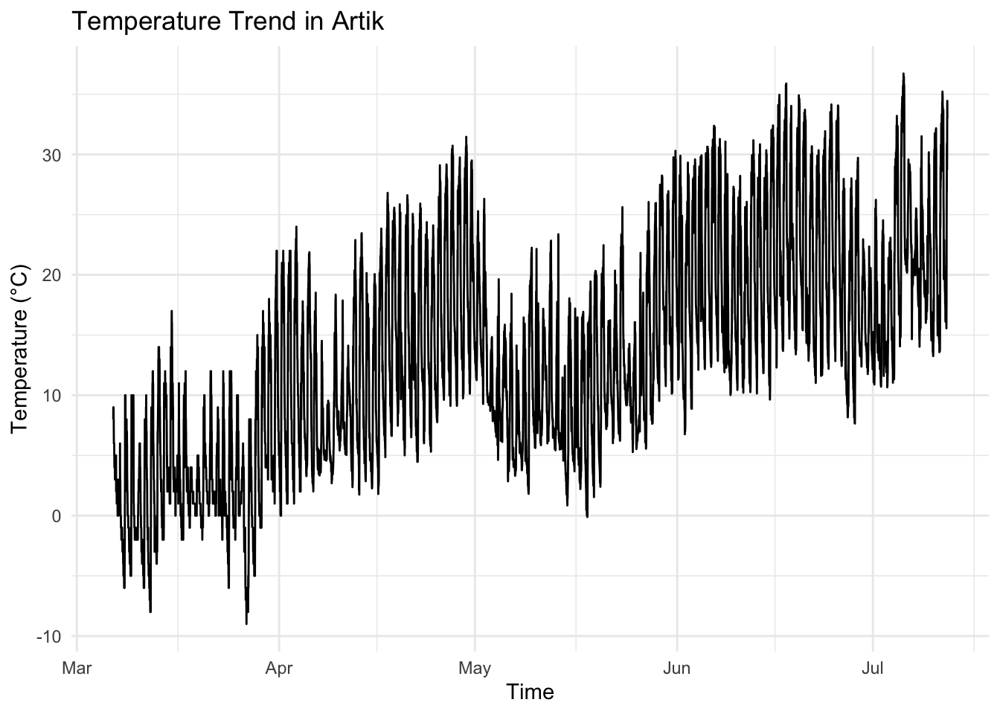
# Temperature trends over time for Gavar
ggplot(gavar, aes(x = time, y = temperature)) +
geom_line(color = "orange") +
ggtitle("Temperature Trend in Gavar") +
xlab("Time") + ylab("Temperature (°C)") +
theme_minimal()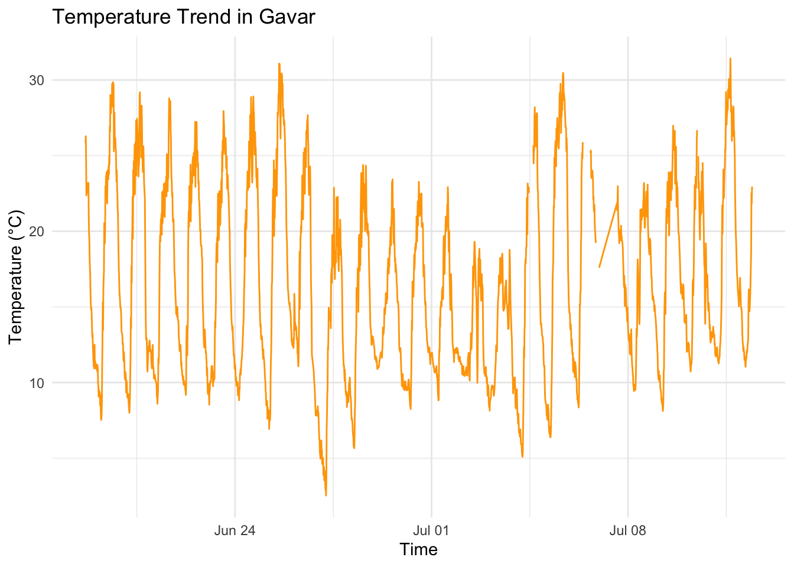
# Temperature trends over time for Maralik
ggplot(maralik, aes(x = time, y = temperature)) +
geom_line(color = "green") +
ggtitle("Temperature Trend in Maralik") +
xlab("Time") + ylab("Temperature (°C)") +
theme_minimal()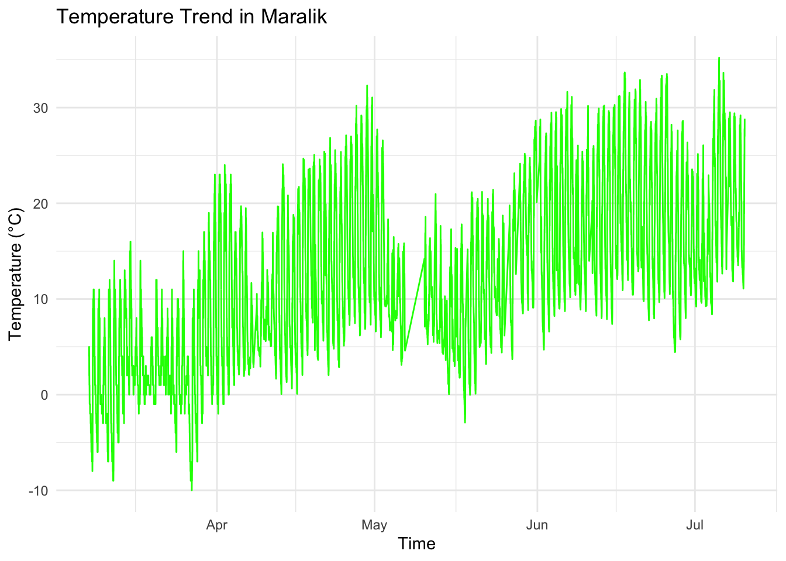
# Precipitation Analysis
# Extract month and year
artik <- artik %>% mutate(month = floor_date(time, "month"))
gavar <- gavar %>% mutate(month = floor_date(time, "month"))
maralik <- maralik %>% mutate(month = floor_date(time, "month"))
# Group by month and sum precipitation
artik_monthly_precip <- artik %>% group_by(month) %>% summarise(total_rain = sum(rain, na.rm = TRUE))
gavar_monthly_precip <- gavar %>% group_by(month) %>% summarise(total_rain = sum(rain, na.rm = TRUE))
maralik_monthly_precip <- maralik %>% group_by(month) %>% summarise(total_rain = sum(rain, na.rm = TRUE))
# Plot monthly precipitation
ggplot(artik_monthly_precip, aes(x = month, y = total_rain)) +
geom_bar(stat = "identity") +
ggtitle("Monthly Precipitation in Artik") +
xlab("Month") + ylab("Total Precipitation (mm)") +
theme_minimal()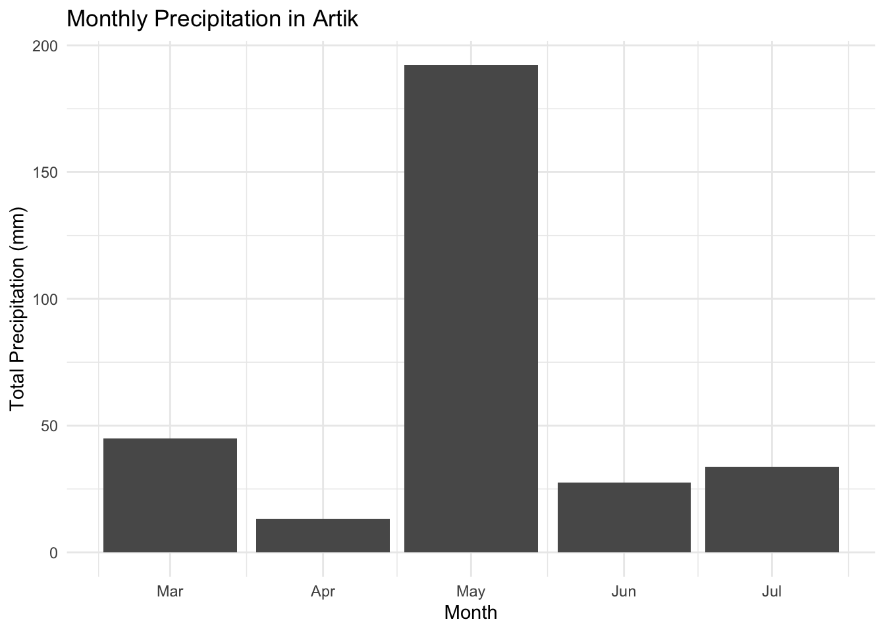
ggplot(gavar_monthly_precip, aes(x = month, y = total_rain)) +
geom_bar(stat = "identity", fill = "orange") +
ggtitle("Monthly Precipitation in Gavar") +
xlab("Month") + ylab("Total Precipitation (mm)") +
theme_minimal()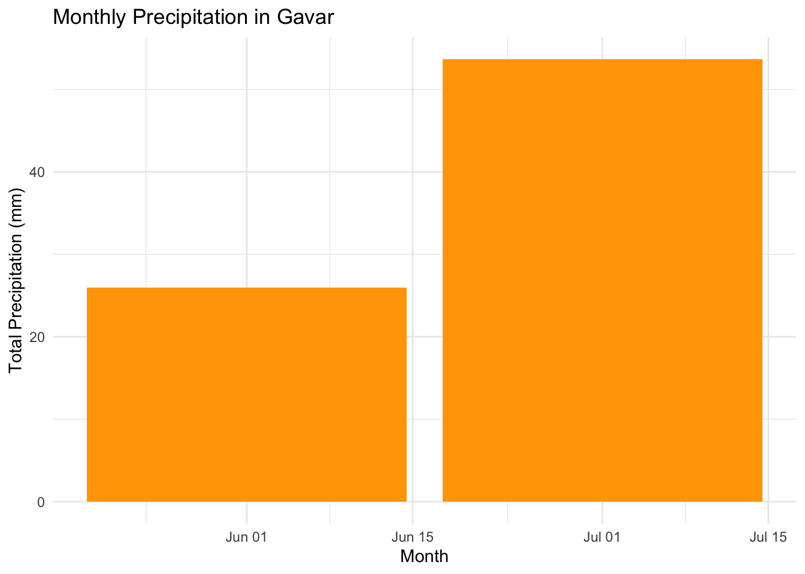
ggplot(maralik_monthly_precip, aes(x = month, y = total_rain)) +
geom_bar(stat = "identity", fill = "green") +
ggtitle("Monthly Precipitation in Maralik") +
xlab("Month") + ylab("Total Precipitation (mm)") +
theme_minimal()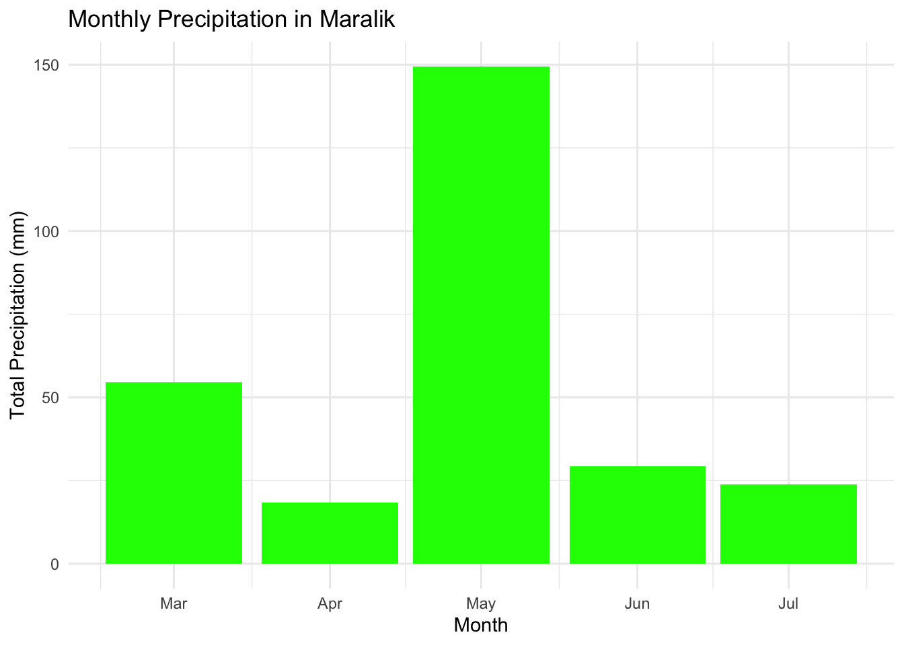
# Wind Speed Analysis
# Wind speed trends over time for Artik
ggplot(artik, aes(x = time, y = speed)) +
geom_line() +
ggtitle("Wind Speed Trend in Artik") +
xlab("Time") + ylab("Wind Speed (m/s)") +
theme_minimal()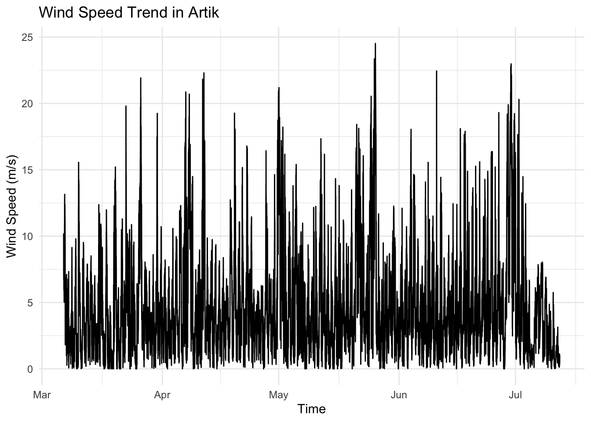
# Wind speed trends over time for Gavar
ggplot(gavar, aes(x = time, y = speed)) +
geom_line(color = "orange") +
ggtitle("Wind Speed Trend in Gavar") +
xlab("Time") + ylab("Wind Speed (m/s)") +
theme_minimal()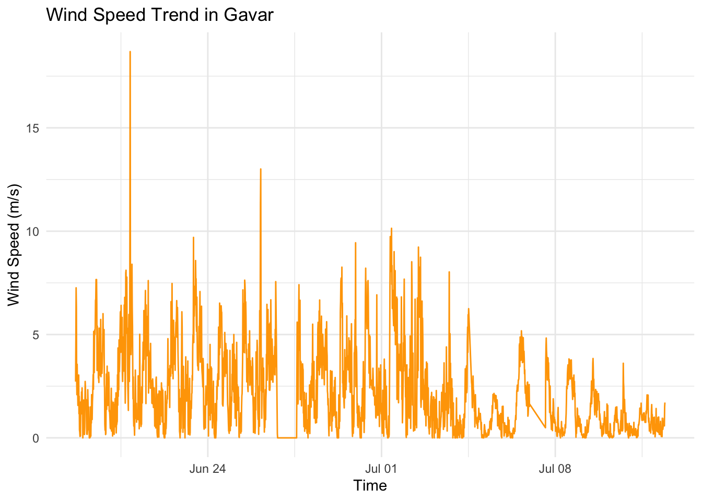
# Wind speed trends over time for Maralik
ggplot(maralik, aes(x = time, y = speed)) +
geom_line(color = "green") +
ggtitle("Wind Speed Trend in Maralik") +
xlab("Time") + ylab("Wind Speed (m/s)") +
theme_minimal()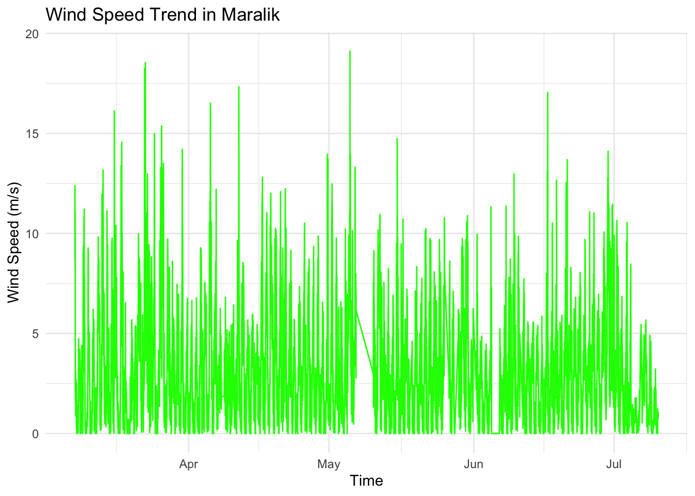
# Humidity Analysis
# Humidity trends over time for Artik
ggplot(artik, aes(x = time, y = humidity)) +
geom_line() +
ggtitle("Humidity Trend in Artik") +
xlab("Time") + ylab("Humidity (%)") +
theme_minimal()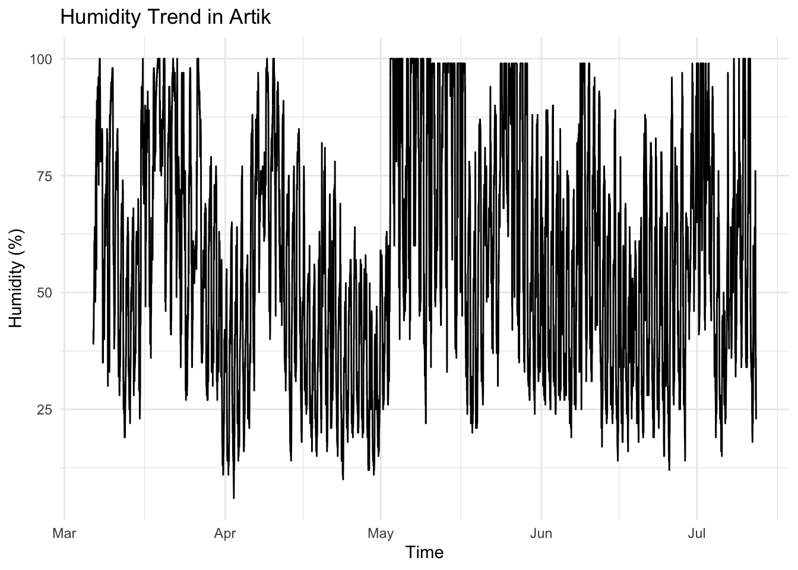
# Humidity trends over time for Gavar
ggplot(gavar, aes(x = time, y = humidity)) +
geom_line(color = "orange") +
ggtitle("Humidity Trend in Gavar") +
xlab("Time") + ylab("Humidity (%)") +
theme_minimal()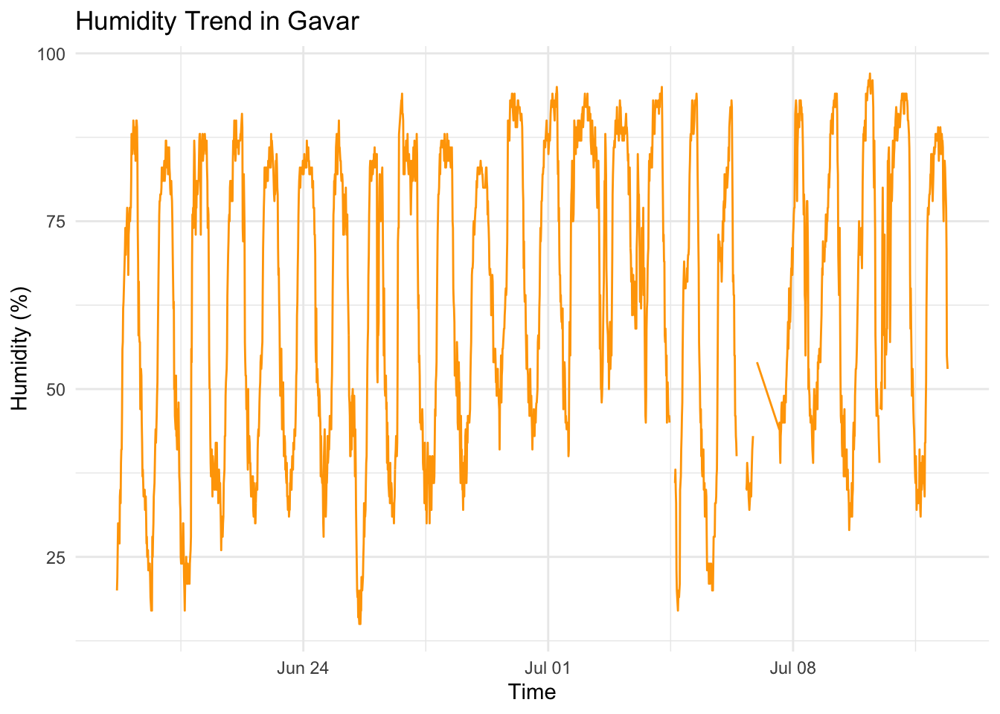
# Humidity trends over time for Maralik
ggplot(maralik, aes(x = time, y = humidity)) +
geom_line(color = "green") +
ggtitle("Humidity Trend in Maralik") +
xlab("Time") + ylab("Humidity (%)") +
theme_minimal()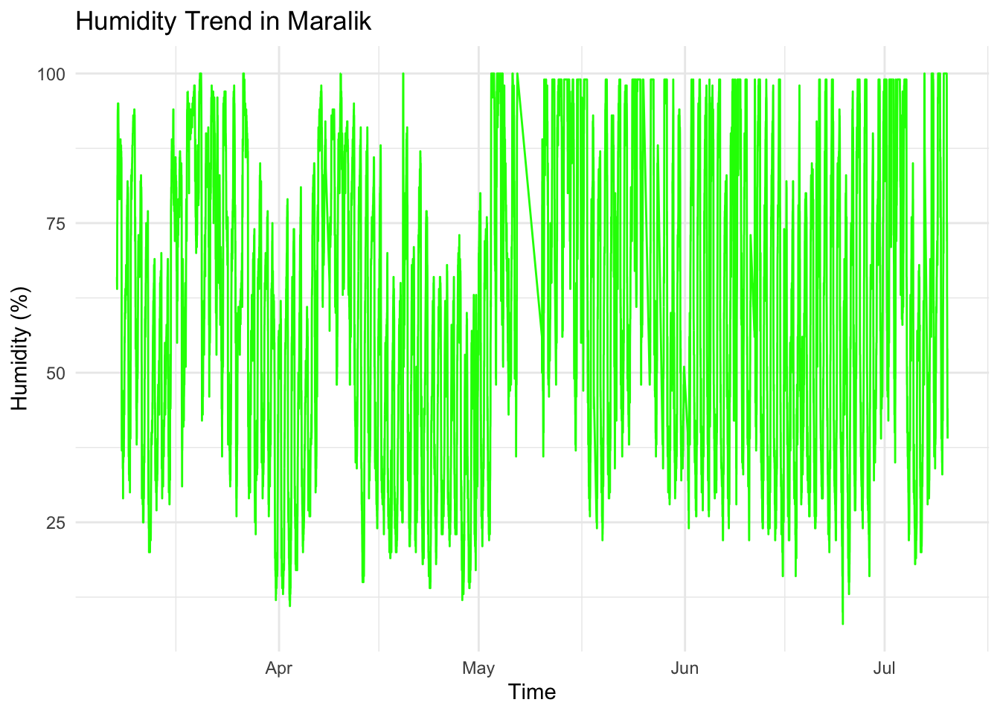